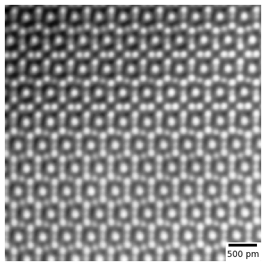
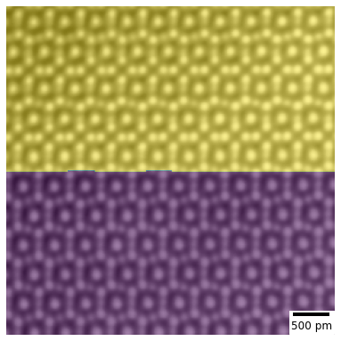

from pyiron_experimental import Project
import matplotlib.pyplot as plt
pr = Project('tem')
pr.remove_jobs_silently(recursive=True)
tem_job = pr.create_job(pr.job_type.pySTEMTEMMETAJob, 'tem')
tem_job.file_name = "./experiment.emd"
tem_job.plot()

tem_job.input
| Parameter | Value | Comment | |
|---|---|---|---|
| 0 | file_name | ./experiment.emd | |
| 1 | n_patterns | 2 | |
| 2 | patch_x | 20 | |
| 3 | patch_y | 20 | |
| 4 | window_x | 20 | |
| 5 | window_y | 20 | |
| 6 | step | 20 | |
| 7 | upsampling | True |
tem_job.run()
The job tem was saved and received the ID: 30
method: direct
tem_job.plot(labels=True)

tem_job['output/generic/segmentation_labels']
array([[1, 1, 1, ..., 1, 1, 1],
[1, 1, 1, ..., 1, 1, 1],
[1, 1, 1, ..., 1, 1, 1],
...,
[0, 0, 0, ..., 0, 0, 0],
[0, 0, 0, ..., 0, 0, 0],
[0, 0, 0, ..., 0, 0, 0]], dtype=int32)
pr.job_table()
| id | status | chemicalformula | job | subjob | projectpath | project | timestart | timestop | totalcputime | computer | hamilton | hamversion | parentid | masterid | |
|---|---|---|---|---|---|---|---|---|---|---|---|---|---|---|---|
| 0 | 30 | finished | None | tem | /tem | None | /home/pyiron/pyiron/project/pyiron-workflow-TEMImageSegmentation/tem/ | 2021-02-01 09:17:42.509303 | None | None | pyiron@42a64cd396a9#1 | GenericJob | 0.4 | None | None |